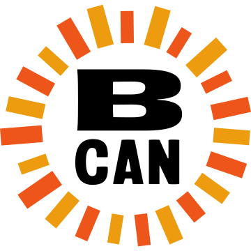
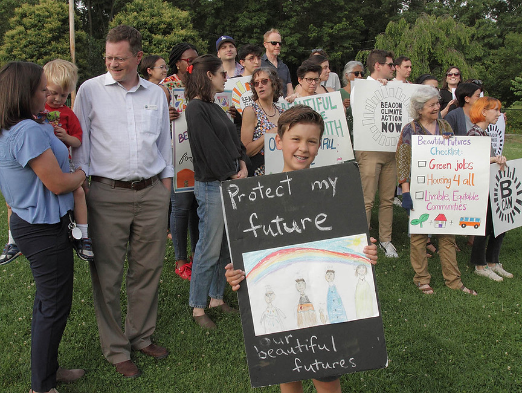

Fighting the climate crisis together
Beacon Climate Action Now
We work with our neighbors in the Mid-Hudson Valley to create a hopeful, joyful home for us all.
The Mid-Hudson Valley is our home, so we’ve come together to find political solutions for the climate crisis and empower communities to take action at all levels of government. We believe that the impact of our local organizing can ripple out well beyond our region to other parts of the state and the country.
Embedded in all of our work is the intentional prioritization of marginalized communities who are most impacted by the crises we face. From this context, we work to:
Recreate systems of care in our communities by participating in mutual aid, hosting free events, and partnering with other community groups.
Organize policy campaigns that provide tangible benefits for our communities, ensure an equitable transition to a future that leaves no one behind, and honor our relationship to all living beings.
Elect leaders who champion bold, progressive policies that prioritize the needs of people and the planet over corporate profit.
We are ambitious and visionary when it comes to climate justice. We are laser-focused on creating systemic change to our broken politics. And we know that the biggest political changes happen when people collectively demand better.

We believe community and collaboration is key to long-term thriving. We find ways to care for each other, and move forward with joy, respect, and an exuberance for our home.

Affordable housing is top of mind for everyone in our community, as proven by the hundreds of conversations we've had with neighbors in Beacon and Fishkill over the past two years. It's a complicated problem, but we've been advocating for equitable solutions that prioritize the needs of everyday people, not developers and private equity-backed landlords.
Through our active engagement with the city council, we helped convince Beacon to dedicate more money in its yearly budget towards finding solutions to our housing crisis, like devoting staff to housing coordination and funding public awareness campaigns on tenant rights.

On August 19, the Beacon City Council unanimously passed Good Cause Eviction, which will help protect tenants from exorbitant rent hikes and unfair evictions. BCAN worked hard to ensure that Beacon's law is tailored as much as possible to meet the needs of our community, ensuring that the maximum number of renters are covered.
This win would not have been possible without the hard work of BCAN's members and allies (including our friends at Community Voices Heard, Housing Justice For All, MHV-DSA, and For the Many), who wrote letters and emails, spoke out week after week at city council, and met with their ward representatives.
We have a long way to go to build a more affordable, accessible community, but this was a key first step to keep people in their homes.

Green jobs. Housing for all. A livable community.
We believe that local government can (and should) make a direct, positive impact on people’s lives. That's why we’re calling on our leaders to embrace policies that put the needs of our Hudson Valley community and environment first.
To start, we talked to neighbors in Beacon, Fishkill, and Poughkeepsie to understand what folks’ concerns and priorities are—and how we can make the government work better for us all. Our Beautiful Future starts now, and it starts with us.
We also endorsed local candidates in the 2023 election cycle who supported our vision and pledged to champion it while in office.

On March 13, 2023, Beacon became the third municipality in New York to pass legislation that will prohibit the use of natural gas in nearly all newly constructed buildings and major renovations (effective January 1, 2024). The move will save residents money on their utility bills, cap fossil fuel emissions from buildings in the city, and protect the health of children and families.
How did we do it? BCAN spent months talking to our neighbors and collecting over 400 in-person petition signatures from supporters, collaborating with two City Council members as allies (Paloma Wake and Dan Aymar-Blair) and consistently showed up to City Council meetings in large numbers to make public comments, among other tactics.
Thanks to the organizing efforts of BCAN, Beacon has passed one of the strongest electrification mandates in the country. This bolstered support for NY State’s All-Electric Buildings Act, which passed soon afterward as part of the state budget.